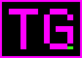

AI Prompting for Everyone
DeepLearning.AI · Issued May 2026

Toni GanselZertifizierungen
Eine vollstaendige Liste meiner Zertifizierungen und Weiterbildungen. Die Mischung ist Absicht: moderne AI-Engineering-Praxis auf einem Fundament aus Security, Testing und Softwarequalitaet.
Schwerpunkte
Alle Zertifikate
Jeder Titel verlinkt auf das jeweilige Zertifikat (PDF).
DeepLearning.AI · Issued May 2026
iSQI GmbH · Issued Apr 2026
Coursera · Issued Mar 2026
Advancing Women in Tech (AWIT) · Issued Mar 2026
Google · Issued Nov 2025
DeepLearning.AI · Issued Oct 2025
DeepLearning.AI · Issued Mar 2025
DeepLearning.AI, Stanford University · Issued Jan 2025
DeepLearning.AI, Amazon Web Services · Issued Oct 2024
Vanderbilt University · Issued Sep 2024
Vanderbilt University · Issued Jun 2024
Infosec · Issued May 2024
Vanderbilt University · Issued May 2024
Vanderbilt University · Issued May 2024
DeepLearning.AI · Issued Nov 2023
Google · Issued Oct 2023
Microsoft · Issued Jul 2023
Google · Issued Apr 2023
LearnQuest · Issued Apr 2023
University of Michigan · Issued Mar 2023
DeepLearning.AI · Issued Dec 2022
John Hopkins University · Issued Oct 2020
Scrum.org · Issued May 2020
iSQI Group · Issued Mar 2019
German Testing Board e.V. · Issued Feb 2019
EC-Council · Issued Nov 2017 · Expired Nov 2020
University of Maryland · Issued May 2016
ISSECO · Issued Nov 2014 · Expired Nov 2019
iSQI Group · Issued May 2014
iSQI Group · Issued Aug 2013
EXIN · Issued Jul 2013
Orientation in Objects GmbH · Issued Oct 2005
ILS Institut für Lernsysteme · Issued Sep 2003
Badges
Badges von DeepLearning.AI und Partnern. Jeder Badge verlinkt auf den Nachweis.
DeepLearning.AI · Anthropic · Issued May 2026
DeepLearning.AI · JetBrains · Issued May 2026
DeepLearning.AI · CopilotKit · Issued May 2026
Anthropic · Issued Apr 2026
Anthropic · Issued Apr 2026
Anthropic · Issued Apr 2026
DeepLearning.AI · Anthropic · Issued Jan 2026
DeepLearning.AI · Giskard · Issued Oct 2025
Microsoft · Penn State University · Issued Jul 2024